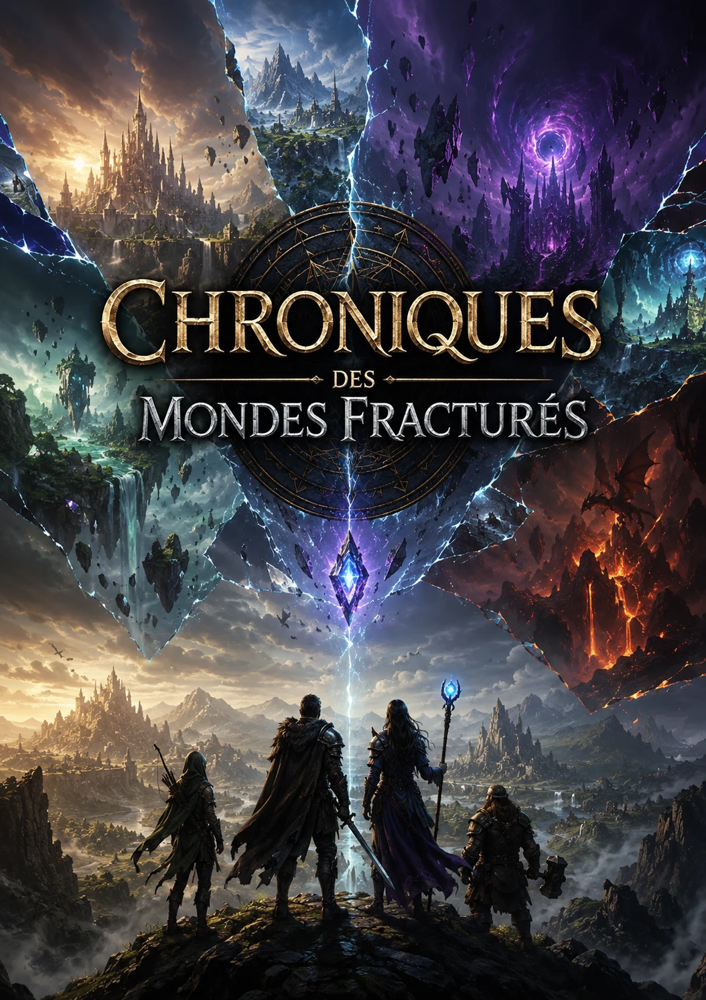

Quand un monde se fracture, plusieurs histoires naissent.
Des réalités contrastées, des frontières brisées et des destins croisés forment la base de cet univers. La couverture officielle en devient la fondation visuelle.
Une fresque de fantasy épique conçue comme un univers complet. Les récits, cartes, personnages, jeux ou autres créations confirmées seront regroupés sous cette même bannière.

Des réalités contrastées, des frontières brisées et des destins croisés forment la base de cet univers. La couverture officielle en devient la fondation visuelle.
Les futures créations confirmées — récits, cartes, jeux, personnages ou documents — seront présentées ici comme des branches du même monde.
La structure est prête sans annoncer de contenu qui n'a pas encore été confirmé.
Romans, nouvelles ou épisodes officiels seront réunis dans cette bibliothèque.
Contenu à venirTerritoires, réalités, cultures et cartes pourront être explorés sans quitter l'univers principal.
Contenu à venirJeux ou autres formats officiellement reliés seront classés ici plutôt que comme projets séparés.
Contenu à venirChaque nouvelle pièce officielle pourra être ajoutée à l'écosystème sans modifier la structure principale du site Benoit Cantin.